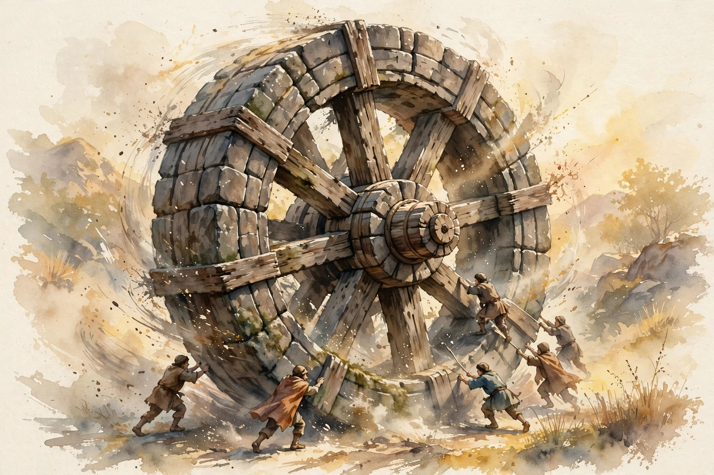

The Knowledge Project · Episode 6 · Companion
Jim Collins
Jim Collins spent decades studying why some companies become great and others decline. This companion follows the full episode and pulls out the ideas on luck, Level 5 leadership, the flywheel, the 20-mile march, and the five stages of decline.

Illustration. The flywheel. Steady pushes compound. Lurching destroys momentum. AI-generated watercolor made for this page.
Watch. The official episode video. Use the chapter menu above to jump to any section of this companion as you listen.
The Wisdom Index: every nugget in this companion
Part 1
Luck Is Asymmetric
Collins opens with his most quoted finding. Luck does not work the same in both directions:
luck is asymmetric as a cause bad luck can kill you but good luck cannot make you great
Jim Collins on luck, in the episode
Bad luck can end a company. Good luck never builds one. The great firms in his research were not luckier. They were better at turning luck, good and bad, into results.
Asymmetric luck
Hover any bar for detail. A visual model of the episode's claim.
Source: episode transcript. Collins states that bad luck can kill while good luck cannot make great.
Nugget 1 · Luck
Prepare for bad luck, ignore good luck
What happened. Collins found the great companies were not luckier than the comparisons. They handled luck better.
Why it matters. Leaders credit good luck and excuse bad luck. Both habits blind them to what they control.
The principle. Build buffers against bad luck. Treat good luck as noise, not skill.
Part 2
Steve Jobs, 1988
In 1988 Collins spent two hours with Steve Jobs. Jobs was thirty, flat on his back three years after Apple fired him, sitting cross-legged on the floor. This was Jobs 1.0, before the return.
Collins argues you learn the most about leaders at their lowest point. The 1988 Jobs had no power and no aura. Watching him then explained the Jobs 2.0 who later built the greatest wealth machine in history.
Nugget 2 · Leaders
Study leaders at the bottom
What happened. Collins met Jobs in 1988, exiled and powerless, and saw the raw material before the legend.
Why it matters. Success hides character. Failure reveals it, because there is nothing left to hide behind.
The principle. Judge people when they have nothing. That is the person who will act when they have everything.
Part 3
Disciplined People, Thought, Action
Collins lays out his framework in stages. Stage one is disciplined people: get the right people on the bus first. Stage two is disciplined thought: confront the brutal facts. Stage three is disciplined action, which produces the flywheel.
Level 5 leadership sits at the center. The best leaders blend personal humility with indomitable will, and channel their ambition into a cause bigger than themselves.
Part 4
The Flywheel
Good-to-great companies turn a flywheel. Each push adds a little momentum, and the wheel moves slowly at first. Then it spins on its own. There is no single push that did it, which is why outsiders keep asking what the breakthrough moment was.
His example is the UCLA basketball team under John Wooden, which ran off ten championships. Outsiders saw a sudden dynasty. The program saw years of pushes nobody noticed.
The opposite is the doom loop: lurching from program to program, each new direction bleeding the momentum of the last.
Flywheel versus doom loop
A visual model of the episode's contrast. No numbers, just the motion.
Source: episode transcript. Collins contrasts the flywheel's steady pushes with the doom loop's lurching.
Part 5
The 20-Mile March
The 20-mile march means hitting a steady target in good years and bad. Collins compares two companies. Company A grows at twenty-five percent, plus or minus fifteen. Company B grows at forty-five percent, plus or minus one hundred fifteen.
Company A wins over time. The wild swings of Company B destroy more in bad years than they gain in good ones. Discipline beats intensity.
Steady beats spectacular
Hover any bar for detail.
Source: episode transcript. Company A at 25 plus or minus 15 beats Company B at 45 plus or minus 115.
He pairs the march with bullets then cannonballs. Fire small test shots first, like the iPod as a bullet, then fire the cannonball once a bullet hits. Big bets without calibration are just gambling.
Nugget 3 · Discipline
March twenty miles every day
What happened. Collins shows the steady company beating the volatile one, and pairs it with small calibrated bets before big ones.
Why it matters. Bad years destroy more than good years create. Survival is a growth strategy.
The principle. Set a pace you can hold in any weather. Test with bullets, then fire cannonballs.
Part 6
Decline and Leadership
Collins maps five stages of decline and prescribes productive paranoia as the defense. Stay paranoid while things work, or the stages will find you.
His years at West Point, holding the chair for the study of leadership, sharpened his definition. He borrows Eisenhower's line: leadership is the art of getting people to want to do what must be done.
Five stages of decline
Hover any step for detail.
Source: episode transcript. Collins describes five stages of decline. Productive paranoia keeps companies out of them.
Takeaways
- Bad luck can kill you. Good luck cannot make you great. Plan accordingly.
- Study leaders at their lowest point. That is the real person.
- Turn the flywheel with steady pushes. Never lurch.
- March twenty miles in every weather. Fire bullets before cannonballs.